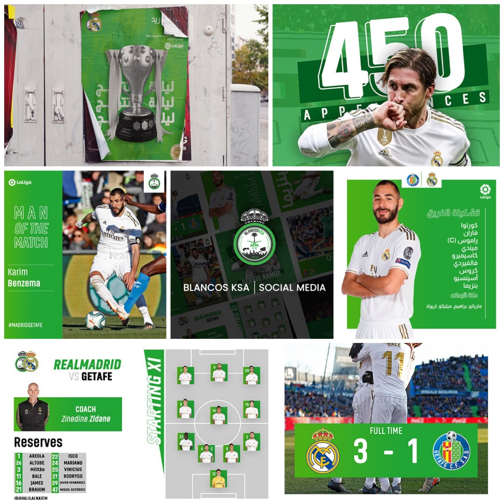
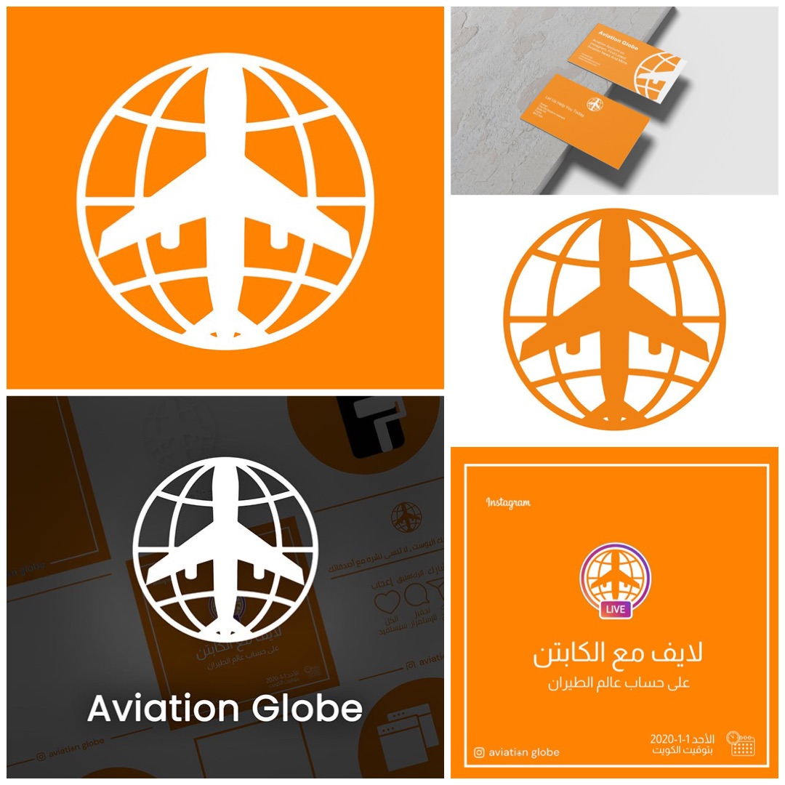
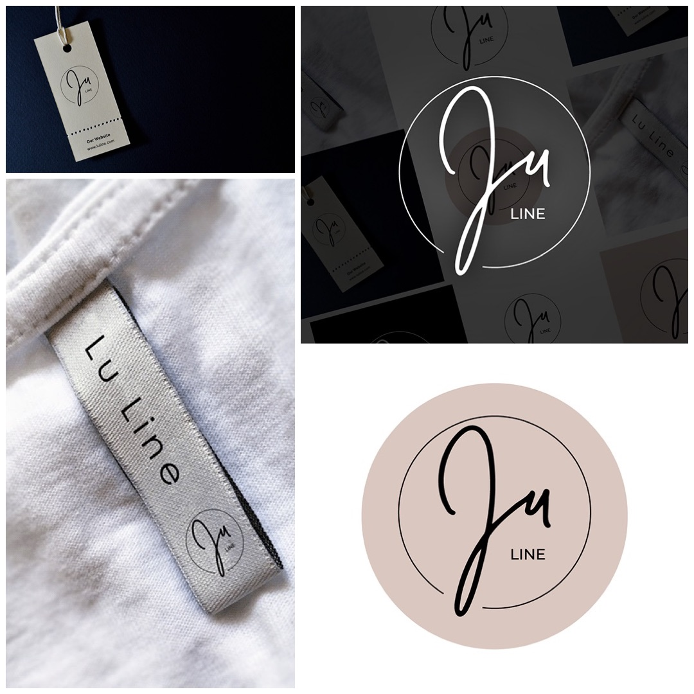
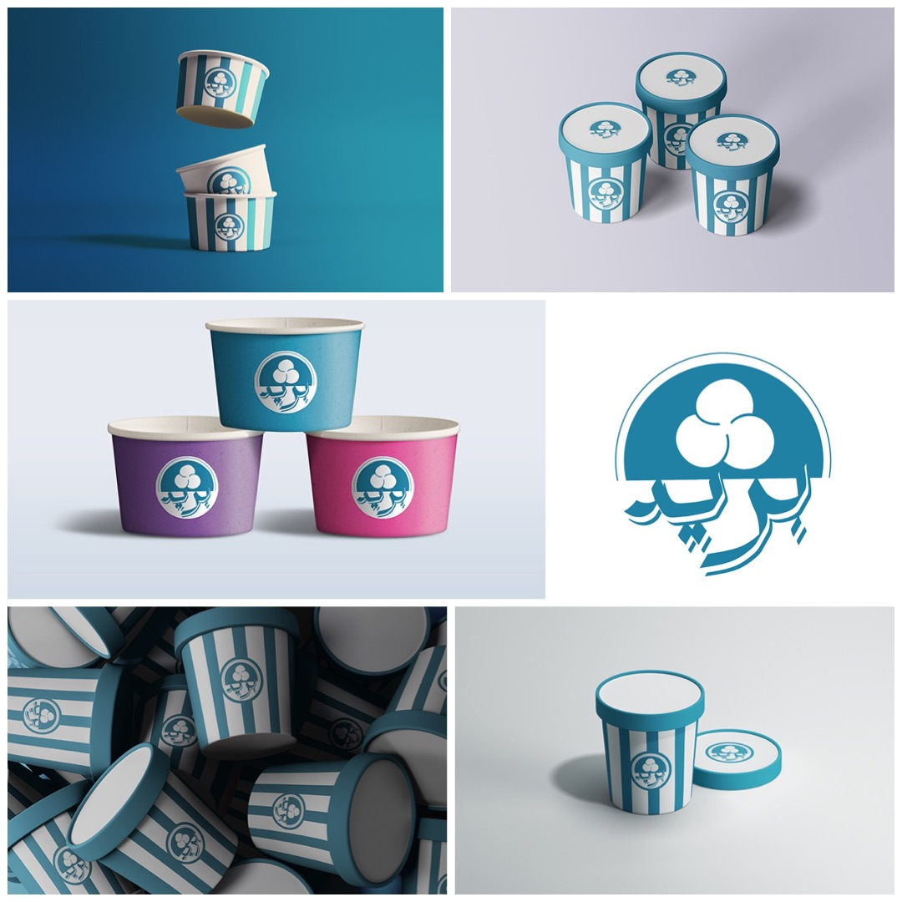

Projects & Ventures
المشاريع والمبادرات
Building Now
AI · Education · Arabic
Sanad, سند
سند
Arabic-language AI education platform on X (@ask_sanad). Targeting Gulf youth who feel stuck, using AI for genuine self-understanding rather than productivity alone. Written in Kuwaiti Arabic dialect.
منصة تعليمية للذكاء الاصطناعي باللغة العربية على منصة X (@ask_sanad). تستهدف شباب الخليج الذين يشعرون بالركود، وتوظّف الذكاء الاصطناعي لمعرفة الذات بدلاً من الإنتاجية فحسب. مكتوبة باللهجة الكويتية.
Work in Progress
AI · Kuwait · Public Service
Tasheel, تسهيل
تسهيل
Concept-stage AI assistant for navigating Kuwait's government paperwork and bureaucratic processes. Designed to reduce friction for residents dealing with complex administrative workflows.
مساعد ذكي في مرحلة التصوّر لتبسيط الإجراءات الحكومية والمعاملات البيروقراطية في الكويت. مُصمَّم لتخفيف الأعباء على المقيمين في التعامل مع الإجراءات الإدارية المعقدة.
Concept Stage
iOS · Fitness · Personal
Khalil Flow
خليل فلو
Personal recovery and strain tracking app for iOS, inspired by WHOOP. Pulls data from a Polar fitness device and calculates daily readiness and load scores. Designed the interface, defined the scoring logic, and shipped a working product to solve a problem with my own training data.
تطبيق iOS لتتبع التعافي والإجهاد الرياضي. يسحب البيانات من جهاز Polar ويحسب جاهزية اليوم. صمّمت الواجهة وبنيت منطق التقييم وأطلقت منتجًا فعليًا.
Active
Infrastructure & Tools
AI · Automation · Tools
Personal MCP Server
خادم MCP الشخصي
A custom Model Context Protocol server running as a personal AI agent. Connects local tools and data sources into a unified agentic workflow, built on the homelab stack.
خادم MCP مخصص يعمل كعميل ذكاء اصطناعي شخصي. يربط الأدوات المحلية ومصادر البيانات في سير عمل موحّد، مبني على البنية التحتية المنزلية.
Active
Infrastructure · Homelab · AI
Self-Hosted AI Stack
بنية الذكاء الاصطناعي المحلية
Raspberry Pi 5 homelab running Pi-hole, Unbound, Tailscale, and Open WebUI for local LLMs. RTX 3090 for local inference and fine-tuning. Tinkering with tiny models for edge deployment. Custom MCP servers connecting personal data sources into agentic workflows. Built and maintained entirely solo.
بنية تحتية منزلية على Raspberry Pi 5 تشغّل Pi-hole وUnbound وTailscale وOpen WebUI لنماذج اللغة المحلية. محطة عمل بـRTX 3090 لاستدلال النماذج المحلية وتجارب الضبط الدقيق.
Running
AI · Productivity · Research
AI Workflow & Research Tools
أدوات سير العمل والبحث بالذكاء الاصطناعي
A set of personal productivity tools for AI-assisted work: a dashboard tracking project progress, a session logger for inputs and outputs across different AI tools, and integrations connecting university course systems and calendar directly into AI assistants. Built to work faster and more accurately.
مجموعة أدوات إنتاجية شخصية للعمل بمساعدة الذكاء الاصطناعي: لوحة تتبع تقدم المشاريع ومسجّل جلسات وتكاملات تربط أنظمة الجامعة بالمساعدات الذكية.
Active
AI · Creative · Generative
AI-Assisted Creative Work
الإبداع بمساعدة الذكاء الاصطناعي
Using AI tools across creative domains: building this website with Claude Code, generating music with AI composition tools, creating images with Stable Diffusion and Midjourney, and experimenting with AI video generation. AI is not a tool I use occasionally — it is how I build everything.
توظيف أدوات الذكاء الاصطناعي في مجالات إبداعية: بناء هذا الموقع، وتوليد الموسيقى، وإنشاء الصور والفيديو. الذكاء الاصطناعي ليس أداة أستخدمها أحيانًا — بل هو طريقتي في بناء كل شيء.
Ongoing
Completed
LLM · Customer Service · Fintech
ROWAD Chatbot
روّاد، المساعد الذكي
LLM-powered customer service chatbot built for Warba Bank's ROWAD 5.0 national innovation competition. Runner-up finish from a national field. Prize: KD 1,200.
مساعد ذكي مبني على نماذج اللغة الكبيرة، طُوِّر لمسابقة روّاد 5.0 لبنك وربة. حلّ في المركز الثاني على المستوى الوطني. الجائزة: 1,200 دينار كويتي.
Completed · 2024
Coaching · Personal Development · Brand
Coaching Solopreneur
مدرّب مستقل
Launched a personal development coaching brand at 17. Built everything independently: ebook, website, newsletter, AI assistant, all copywriting. Produced a Goal Setting Mini Guide in Arabic. Delivered 1:1 coaching. Spoke to 70 people at the iAcademyPD.
أطلق علامة تدريب تنموي شخصي في سن السابعة عشرة. بنى كل شيء باستقلالية: كتاب إلكتروني وموقع ونشرة وذكاء اصطناعي وكامل النصوص. أنتج دليل تحديد الأهداف بالعربية. قدّم تدريبًا فرديًا. تحدّث لـ70 شخصًا في الأكاديمية الدولية للتطوير الشخصي.
2021–2025
Leadership · Events · Competition
Stage Manager, CSU Case Competition
مدير المسرح، مسابقة CSU
Served as stage manager for a university case competition. Responsible for coordinating logistics, managing the event flow, and ensuring a professional experience for participants and judges.
تولّى إدارة المسرح في مسابقة جامعية. كان مسؤولاً عن تنسيق اللوجستيات وإدارة سير الفعالية وضمان تجربة احترافية للمشاركين والمحكّمين.
Completed
Archive
Design · Branding · Freelance
Freelance Design Work
أعمال التصميم الحر
Commercial design across branding and digital media. Clients include Real Madrid Saudi (fan association) and others, beginning at age 16. Ran in parallel with studies and ventures.
تصميم تجاري في مجالَي الهوية البصرية والإعلام الرقمي. يشمل العملاء ريال مدريد السعودي وآخرين، بدأ في سن السادسة عشرة بالتوازي مع الدراسة والمشاريع.
2019–2022 · Stopped





Content · Brand · Entrepreneurship
Khalil Alnajem, 2020
خليل الناجم، 2020
Built an Instagram brand under my own name at 17. Created content, taught myself design and business from scratch. Interviewed Eric Edmeades (on record). Not a credential. Just proof that the drive was there before any institution recognised it.
بنى علامة شخصية على إنستغرام وأنتج محتوى وتعلّم التصميم والأعمال بنفسه من الصفر في سن السابعة عشرة. أجرى مقابلة مع إريك إدميدز (موثّقة). ليست وثيقة رسمية. بل دليل على أن الدافع كان موجودًا قبل أن تعترف به أي مؤسسة.
2019 · Archived
@khalilalnajem →Aviation · Content · Social Media
Aviation Globe
أفييشن غلوب
An aviation passion project on Instagram sharing knowledge, news, and content about the aviation industry. Built an engaged audience around a genuine personal interest in flight and aerospace.
مشروع شغف بالطيران على إنستغرام لمشاركة المعرفة والأخبار والمحتوى حول صناعة الطيران. بنى جمهورًا متفاعلاً حول اهتمام شخصي حقيقي بالطيران والفضاء.
2018–2020 · Archived
@aviationglobe →E-commerce · Early Venture
Dropshipping Venture
مشروع دروبشيبينغ
Early e-commerce attempt during COVID. Earned first revenue online but learned quickly that getting paid once is not the same as building something that lasts. No real operating system behind it. The failure taught me more about business structure than any class did.
محاولة مبكرة في التجارة الإلكترونية خلال كوفيد. حقّق أول إيراد لكن تعلّم أن الربح مرة لا يعني بناء شيء يدوم. الفشل علّمني عن هيكلة الأعمال أكثر من أي محاضرة.
2020 · Closed